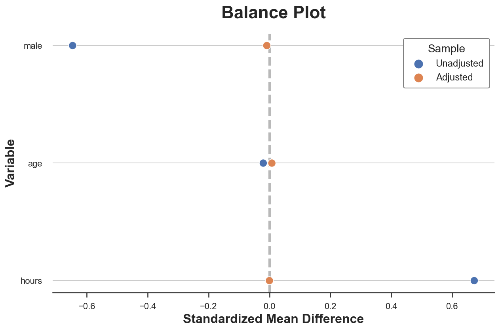
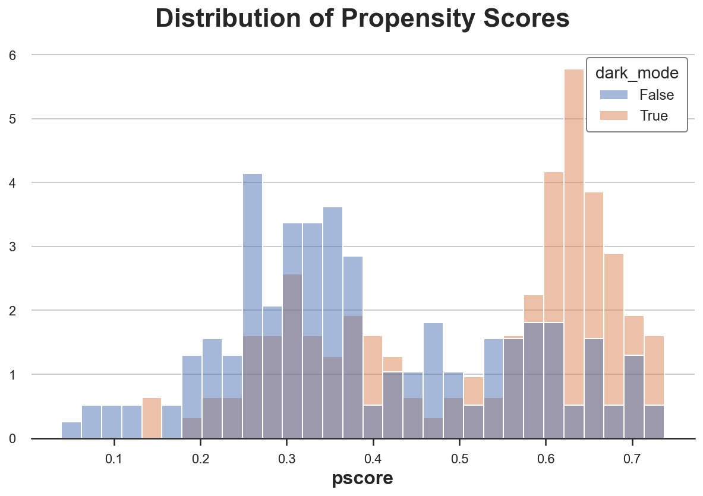

Weighting, Matching, or Regression?
Understanding and comparing different methods for conditional causal inference analysis
INTRO
Example
Assume we had blog on statistics and causal inference. To improve user experience, we are considering releasing a dark mode, and we would like to understand whether this new feature increases the time users spend on our blog.

We are not a sophisticated company, therefore we do not run an AB test but we simply release the dark mode and we observe whether users use it or not and the time they spend on th blog. We know that there might be selection: users that prefer the dark mode could have different reading preferences and this might complicate our causal analysis.
We can represent the data generating process with the following Directed Acyclic Graph (DAG). If you are not familiar with DAGs, I have written a short introduction here.
flowchart TB
classDef included fill:#DCDCDC,stroke:#000000,stroke-width:2px;
classDef excluded fill:#ffffff,stroke:#000000,stroke-width:2px;
classDef unobserved fill:#ffffff,stroke:#000000,stroke-width:2px,stroke-dasharray: 5 5;
X1((gender))
X2((age))
X3((hours))
D((dark mode))
Y((read time))
D --> Y
X1 --> Y
X1 --> D
X2 --> D
X2 --> Y
X3 --> D
X3 --> Y
class D,Y included;
class X1,X2,X3 excluded;
We generate the simulated data using the data generating process dgp_darkmode() from src.dgp. I also import some plotting functions and libraries from src.utils.
%matplotlib inline
%config InlineBackend.figure_format = 'retina'
from src.utils import *
from src.dgp import dgp_darkmode
df = dgp_darkmode().generate_data()
df.head()
| read_time | dark_mode | male | age | hours | |
|---|---|---|---|---|---|
| 0 | 9.44 | False | 0 | 43.0 | 79.17 |
| 1 | 11.35 | True | 1 | 55.0 | 130.35 |
| 2 | 19.87 | False | 0 | 23.0 | 458.21 |
| 3 | 17.08 | False | 0 | 41.0 | 133.30 |
| 4 | 20.80 | True | 0 | 29.0 | 179.65 |
We have informations on 300 individuals for whom we observe whether they use the dark_mode (the treatment), their weekly read_time (the outcome of interest) and some characteristics like gender, age and total hours spend on the blog.
We would like to estimate the effect of the new dark_mode on users' read_time. If we were runnig an AB test or randomized control trial, we could just compare users with and without the dark mode and we could attribute difference in average reading time to the dark_mode.
np.mean(df.loc[df.dark_mode==True, 'read_time']) - np.mean(df.loc[df.dark_mode==False, 'read_time'])
-1.2753317748606374
Individuals that select the dark_mode spend on average 1.27 hours per week less on the blog. Should we conclude that dark_mode is a bad idea? Is this a causal effect?
We did not randomize the dark_mode so that users that use it might not be directly comparable with users that don’t. Can we check this concern? Partially. We can only check it for characteristics that we observe, gender, age and total hours in our setting. We cannot check if users differ along other dimensions that we don’t observe.
Let’s use the create_table_one function from Uber’s causalml package to produce a covariate balance table, containing the average value of our observable characteristics, across treatment and control groups. As the name suggests, this should always be the first table you present in causal inference analysis.
from causalml.match import create_table_one
X = ['male', 'age', 'hours']
table1 = create_table_one(df, 'dark_mode', X)
table1
| Control | Treatment | SMD | |
|---|---|---|---|
| Variable | |||
| n | 166 | 134 | |
| age | 41.33 (11.60) | 44.13 (10.57) | 0.2524 |
| hours | 303.91 (330.20) | 205.16 (279.63) | -0.3228 |
| male | 0.37 (0.48) | 0.66 (0.48) | 0.6025 |
There seems to be some difference between treatment (dark_mode) and control group. In particular, users that use the dark_mode are older, have spend less hours on the blog and they are more likely to be males.
Another way to visually observe all the differences at once is with a paired violinplot. The advantage of the paired violinplot is that it allows us to observe the full distribution of the variable (approximated via kernel density estimation).
def plot_distributions(df, X, d):
df_long = df.copy()[X + [d]]
df_long[X] =(df_long[X] - df_long[X].mean()) / df_long[X].std()
df_long = pd.melt(df_long, id_vars=d, value_name='value')
sns.violinplot(y="variable", x="value", hue=d, data=df_long, split=True).\
set(xlabel="", ylabel="", title="Normalized Variable Distribution");
plot_distributions(df, X, "dark_mode")

The insight of the violinplot is very similar: it seems that users that select the dark_mode are different from users that don’t.
Why do we care?
If we do not control for the observable characteristics, we are unable to estimate the true treatment effect. In short, we cannot be certain that the difference in outcome, read_time, can be attributed to the treatment, dark_mode, instead of other characteristics. For example, it could be that males read more and also prefer the dark_mode, therefore we observe a positive correlation even though dark_mode has no effect on read_time.
In terms of Dyrected Acyclic Graphs, this means that we have several backdoor paths that we need to block in order for our analysis to be causal.
flowchart TB
classDef included fill:#DCDCDC,stroke:#000000,stroke-width:2px;
classDef excluded fill:#ffffff,stroke:#000000,stroke-width:2px;
classDef unobserved fill:#ffffff,stroke:#000000,stroke-width:2px,stroke-dasharray: 5 5;
X1((gender))
X2((age))
X3((hours))
D((dark mode))
Y((read time))
D --> Y
X1 --> Y
X1 --> D
X2 --> D
X2 --> Y
X3 --> D
X3 --> Y
linkStyle 0 stroke:#00ff00,stroke-width:4px;
linkStyle 1,2,3,4,5,6 stroke:#ff0000,stroke-width:4px;
class D,Y included;
class X1,X2,X3 excluded;
How do we block backdoor paths? By conditioning the analysis on those intermediate variables. The conditional analysis allows us to recover the average treatment effect of the dark_mode on read_time.
flowchart TB
classDef included fill:#DCDCDC,stroke:#000000,stroke-width:2px;
classDef excluded fill:#ffffff,stroke:#000000,stroke-width:2px;
classDef unobserved fill:#ffffff,stroke:#000000,stroke-width:2px,stroke-dasharray: 5 5;
X1((gender))
X2((age))
X3((hours))
D((dark mode))
Y((read time))
D --> Y
X1 -.-> Y
X1 -.-> D
X2 -.-> D
X2 -.-> Y
X3 -.-> D
X3 -.-> Y
linkStyle 0 stroke:#00ff00,stroke-width:4px;
class D,Y,X1,X2,X3 included;
How do we condition the analysis on gender, age and hours? We have some options:
- Matching
- Propensity score weighting
- Regression with control variables
Let’s explore and compare them!
Conditional Analysis
We assume that for a set of subjects $i = 1, …, n$ we observed a tuple $(D_i, Y_i, X_i)$ comprised of
- a treatment assignment $D_i \in \lbrace 0, 1 \rbrace$ (
dark_mode) - a response $Y_i \in \mathbb R$ (
read_time) - a feature vector $X_i \in \mathbb R^n$ (
gender,ageandhours)
Assumption 1 : unconfoundedness (or ignorability, or selection on observables)
$$ \big \lbrace Y_i^{(1)} , Y_i^{(0)} \big \rbrace \ \perp \ D_i \ | \ X_i $$
i.e. conditional on observable characteristics $X$, the treatment assignment $D$ is as good as random. What we are effectively assuming is that there is no other characteristics that we do not observe that could impact both whether a user selects the dark_mode and their read_time.
Assumption 2: overlap (or bounded support)
$$ \exists \eta > 0 \ : \ \eta \leq \mathbb E \left[ T_i = 1 \ \big | \ X_i = x \right] \leq 1-\eta $$
i.e. no observation is deterministically assigned to the treatment or control group. This is a more technical assumption that basically means that for any level of gender, age or hours, there could exist an individual that select the dark_mode and one that doesn’t.
Matching
The first and most intuitive method to perform conditional analysis is matching.
The idea of matching is very simple. Since we are not sure whether, for example, male and female users are directly comparable, we do the analysis within gender. Instead of comparing read_time across dark_mode in the whole sample, we do it separately for male and female users.
df_gender = pd.pivot_table(df, values='read_time', index='male', columns='dark_mode', aggfunc=np.mean)
df_gender['diff'] = df_gender[1] - df_gender[0]
df_gender
| dark_mode | False | True | diff |
|---|---|---|---|
| male | |||
| 0 | 17.790000 | 19.385870 | 1.59587 |
| 1 | 13.128525 | 12.405455 | -0.72307 |
Now the effect of dark_mode seems reversed: it is negative for male users but bigger and positive for female users, suggesting a positive aggregate effect (assuming equal proportion of genders)!
This comparison was easy for gender since it is a binary variable. With multiple variables, potentially continuous, matching becomes much more difficult. One common strategy is to match users in the treatment group with the most similar user in the control group, using some sort of neirest neighbor algorithm. I won’t go into the algorithm details here, but we can perform the matching with the NearestNeighborMatch function from the causalml package.
The NearestNeighborMatch function generates a new dataset where users in the treatment group have been matched 1:1 (option ratio=1) to users in the control group.
from causalml.match import NearestNeighborMatch
psm = NearestNeighborMatch(replace=True, ratio=1, random_state=1)
df_matched = psm.match(data=df, treatment_col="dark_mode", score_cols=X)
Are the two groups more comparable now? We can produce a new version of the balance table.
table1_matched = create_table_one(df_matched, "dark_mode", X)
table1_matched
| Control | Treatment | SMD | |
|---|---|---|---|
| Variable | |||
| n | 123 | 123 | |
| age | 43.89 (10.38) | 43.94 (10.40) | 0.0047 |
| hours | 158.59 (154.46) | 152.27 (154.70) | -0.0408 |
| male | 0.65 (0.48) | 0.65 (0.48) | 0.0 |
Now the average differences between the two groups have shrunk by at least a couple of orders of magnitude. We can visually inspect distributional differences with the paired violinplot.
plot_distributions(df_matched, X, "dark_mode")

A popular way to visualize pre- and post-matching covariate balance is the balance plot that essentially displays the standardized mean differences before and after matching, for each control variable.
def plot_balance(t1, t2, X):
df_smd = pd.DataFrame({"Variable": X + X,
"Sample": ["Unadjusted" for _ in range(len(X))] + ["Adjusted" for _ in range(len(X))],
"Standardized Mean Difference": t1["SMD"][1:].to_list() +
t2["SMD"][1:].to_list()})
sns.scatterplot(x="Standardized Mean Difference", y="Variable", hue="Sample", data=df_smd).\
set(title="Balance Plot")
plt.axvline(x=0, color='k', ls='--', zorder=-1, alpha=0.3);
plot_balance(table1, table1_matched, X)

As we can see, now all differences in observable characteristics between the two groups are essentially zero.
How do we estimate the average treatment effect? We can simply do a difference in means. An equivalent way that automatically provides standard errors is to run a linear regression of the outcome, read_time, on the treatment, dark_mode.
smf.ols("read_time ~ dark_mode", data=df_matched).fit().summary().tables[1]
| coef | std err | t | P>|t| | [0.025 | 0.975] | |
|---|---|---|---|---|---|---|
| Intercept | 13.6237 | 0.575 | 23.675 | 0.000 | 12.490 | 14.757 |
| dark_mode[T.True] | 0.7593 | 0.814 | 0.933 | 0.352 | -0.844 | 2.362 |
The effect is now positive, but not statistically significant.
Propensity Score
We want to estimate the average treatment effect
$$ \tau(x) = \mathbb E \left[ Y^{(1)} - Y^{(0)} \ \big| \ X = x \right] $$
We would like to obtain an unbiased estimator that satifies a central limit theorem of the form
$$ \sqrt{n} ( \hat \tau - \tau) \ \overset{d}{\to} \ N(0, V) $$
thus enabling us to construct confidence intervals.
Under unconfoundedness, we can rewrite the average treatment effect as
$$ \tau(x) = \mathbb E \left[ Y^{(1)} - Y^{(0)} \ \big| \ X = x \right] = \mathbb E \left[ \frac{T_i Y_i}{e(X_i)} - \frac{(1-T_i) Y_i}{1-e(X_i)} \right] $$
where $e(X_i)$ is the propensity score of observation $i$,
$$ e(x) = \mathbb P \left[ T_i = 1 \ \big | \ X_i = x \right] $$
i.e. its probability of being treated.
Note that this formulation of the average treatment effect does not depend on the potential outcomes $Y_i^{(1)}$ and $Y_i^{(0)}$, but only on the observed outcomes $Y_i$.
This formulation of the average treatment effect implies the Inverse Propensity Weighted estimator which is an unbiased estimator for the average treatment effect $\tau$
$$ \hat \tau^{*}_{IPW} = \frac{1}{n} \sum _ {i=1}^{n} \left( \frac{T_i Y_i}{e(X_i)} - \frac{(1-T_i) Y_i}{1-e(X_i)} \right) $$
However, this estimator is unfeasible since we do not observe the propensity scores $e(X_i)$.
df["pscore"] = smf.logit("np.rint(dark_mode) ~ male + age + hours", data=df).fit(disp=False).predict()
Is the sample balanced?
sns.histplot(data=df, x='pscore', hue='dark_mode', bins=30, stat='density', common_norm=False).\
set(ylabel="", title="Distribution of Propensity Scores");

As we can see, the distribution of propensity scores between the treatment and control group is significantly different.
We can now estimate the treatment effect as a weighted difference in means.
w = 1 / (df["pscore"] * df["dark_mode"] + (1-df["pscore"]) * (1-df["dark_mode"]))
smf.wls("read_time ~ dark_mode", weights=w, data=df).fit().summary().tables[1]
| coef | std err | t | P>|t| | [0.025 | 0.975] | |
|---|---|---|---|---|---|---|
| Intercept | 15.0144 | 0.551 | 27.239 | 0.000 | 13.930 | 16.099 |
| dark_mode[T.True] | 1.6587 | 0.778 | 2.132 | 0.034 | 0.127 | 3.190 |
Lastly, an extremely interesting result from
Regression with Control Variables
smf.ols("read_time ~ dark_mode + male + age + hours", data=df).fit().summary().tables[1]
| coef | std err | t | P>|t| | [0.025 | 0.975] | |
|---|---|---|---|---|---|---|
| Intercept | 18.6144 | 1.253 | 14.852 | 0.000 | 16.148 | 21.081 |
| dark_mode[T.True] | 1.5973 | 0.647 | 2.469 | 0.014 | 0.324 | 2.871 |
| male | -5.8191 | 0.632 | -9.208 | 0.000 | -7.063 | -4.575 |
| age | -0.0813 | 0.027 | -2.986 | 0.003 | -0.135 | -0.028 |
| hours | 0.0097 | 0.001 | 9.901 | 0.000 | 0.008 | 0.012 |
What is the connection between regression and propensity score weighting?
Conclusion
TBD
References
TBD
Related Articles
- Understanding The Frisch-Waugh-Lovell Theorem
- How to Compare Two or More Distributions
- DAGs and Control Variables
Code
You can find the original Jupyter Notebook here:
https://github.com/matteocourthoud/Blog-Posts/blob/main/notebooks/ipw.ipynb